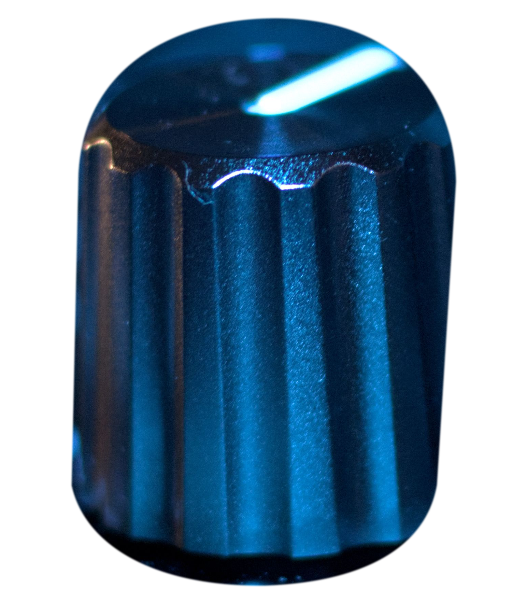
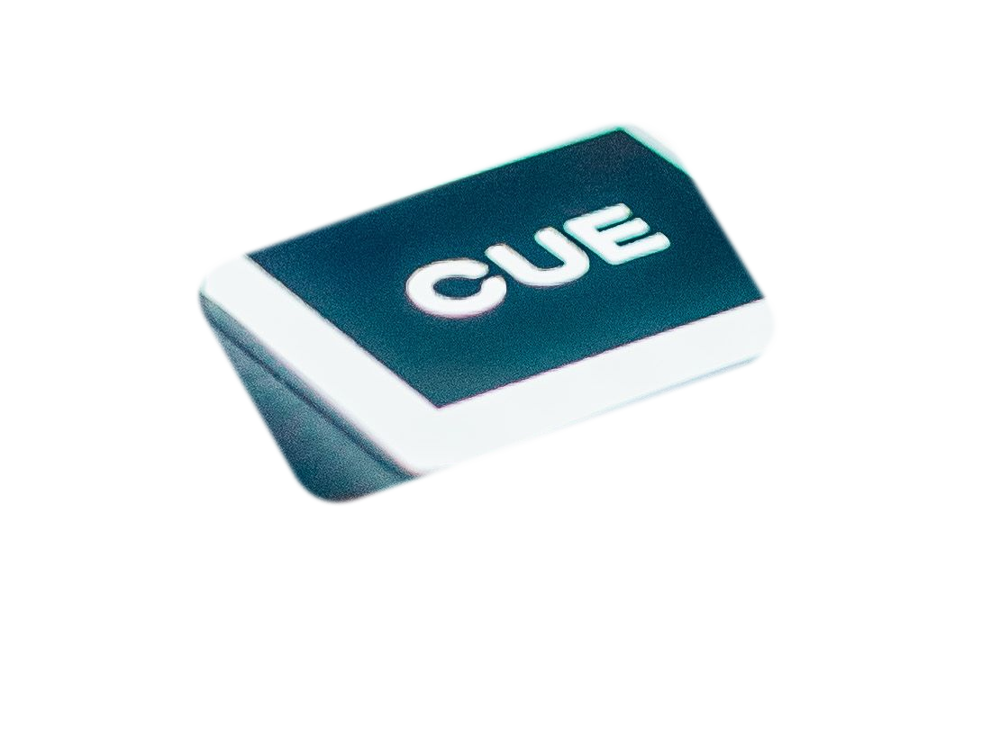
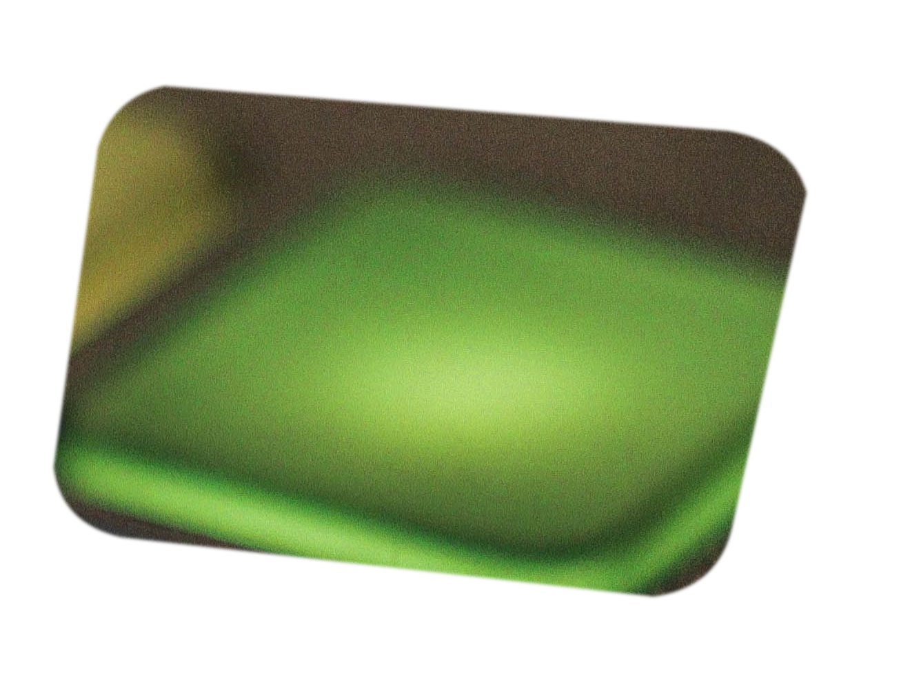
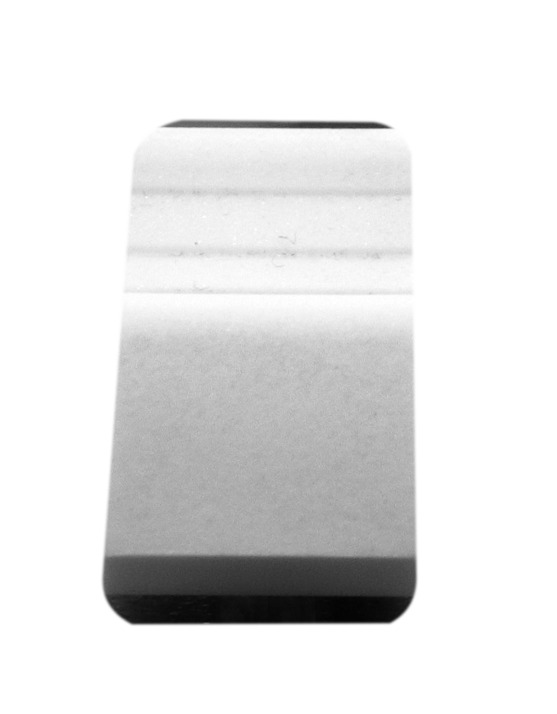

These masks are unusable for mixer-native composition. The objects were photographed at conflicting angles and cannot sit on a directly overhead mixer faceplate.




Directly overhead only: every source must come from a top-down mixer/controller master with a parallel camera plane. Required: true transparent contour, no surrounding panel, no upscaling, no clipped bezel, no perspective correction, and a 1:1 inspection on both black and light backgrounds.